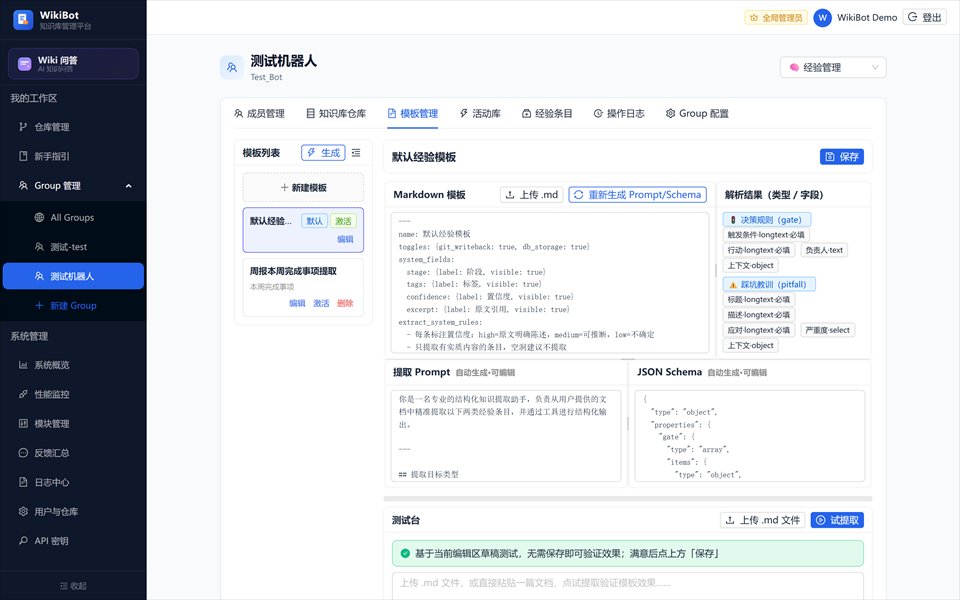
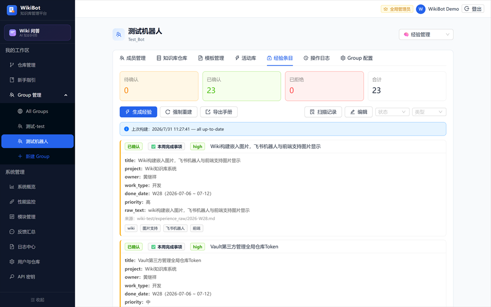

🔍 点击放大WikiBot 围绕「文档」与「经验」两条知识线，把分散在 GitLab 的非结构化内容沉淀为可检索、可追溯的 AI 问答能力，每个 Group 对接一个独立飞书机器人。
原始 .md / PDF / DOCX / PPTX / XLSX 文档经 AI 拆解重组为多类知识页面：源摘要、实体页、概念页、分析页，并生成总索引与综述。示例：16 份原始文件 → 126 个 wiki 页面。
从 GitLab commit 历史中自动扫描提取结构化经验（决策规则 + 踩坑教训），经人工审查确认后入库，飞书机器人可直接查询复用，避免重复踩坑。
WebSocket 长连接（lark-oapi），服务器主动连接飞书，无需公网域名与 Webhook 回调，部署门槛极低。
主路径：LLM 读 wiki/index.md 做页面级语义选页（高置信）；辅路径：pgvector dense+sparse 做段落级召回（补充）。三桶合并，互不截断。
回答内联 [[页面标题]] wiki 链接，底部附「📎 参考来源」可跳转源文件；AI 延展分析明确标注「非知识库原文」。
覆盖文档导入、知识摄取、检索增强、人工审查、运营监控的端到端能力。
登记 GitLab 仓库后自动 clone，支持 PDF / DOCX / PPTX / XLSX / MD 多格式解析入库。
Claude 将原始文档拆解重组为源摘要、实体页、概念页、分析页，并维护总索引与综述。
区分知识查询 / 闲聊 / 偏题意图，支持多轮上下文与查询改写、宽泛问题自动扩展。
每个 Group 可设关 / 低 / 中 / 高四档，控制是否在回答末尾追加 AI 延展分析小节。
以飞书 union_id 为主键，全局管理员、Group 成员分级管理，OAuth 登录一键接入。
按文件夹路径前缀映射 public / confidential 密级，检索层按用户 clearance 过滤越权页，配置变更秒级重标注不调 LLM。
查询量、Top1 命中分、回退率、改写率、延迟 P50/P95、意图分布，量化问答质量。
全链路日志检索与用户反馈汇总，定位问题、回收标注、持续优化知识库。
选页、改写、意图、向量、sparse、精排、AI 分析等模块按 Group 独立开关，配置持久化、即时生效。
回答不只有文字——还能内嵌图片，并用图表呈现流程、时序、柱状、折线、饼图，支持缩放与全屏查看；飞书卡片同步显示图片。
回答里直接显示文档原图，点击可放大细看；飞书卡片同步呈现图片，所见即所得。
用流程图讲清步骤与分支判断，用时序图展示多角色交互；自动生成、可缩放全屏查看。
指标趋势、对比分布用柱状图或折线图一图说清，自带坐标轴，数量关系一目了然。
分类占比、来源分布用饼图直观呈现，整体构成一眼看清。
截图取自本地 WikiBot 系统，相关数据已脱敏，点击任意截图可放大查看。
WikiBot 的查询是两路径并行结构，不是单一向量线性流程：主路径让大模型读 wiki/index.md 做页面级语义选页（置信度高，决定“读哪些页”）；辅路径在 pgvector 上做段落级 dense/sparse 检索（置信度低，作补充）。两路结果按三桶合并，决定页面优先级与内容读取策略，最后一次性流式生成。
Claude 单次调用输出 JSON：代词消解、时间词展开、口语规范化；意图三态（查询 / 问候 / 偏题），问候与偏题跳过检索。
把 index.md 全文交 Claude 做页面级语义判断，行号方案输出 ids 还原路径；精准查询严格筛、汇总查询宁可多选。高置信。
index 向量预筛 ~1ms 选页面，pgvector HNSW 做 dense + sparse RRF（k=60）段落级召回；keyword_path 结构化路径经第二层 RRF 融合。
b1 双命中读整页 / b2 仅 LLM 读整页 / b3 仅向量 chunk-first；跨页段落去重，超预算等比压缩，不丢弃任何页面。
Claude 流式生成，内联 [[wikilink]] 注明来源，底部附「📎 参考来源」可跳源文件；可选 AI 分析小节明确标注非原文。
与知识库（Wiki）并列的独立模块：大模型按模板从文档自动提取结构化经验条目，人工审核入库，三级检索复用，审核通过可写回 Git 与源文档共同版本管理——避免重复踩坑。

🔍 点击放大
🔍 点击放大提取什么字段、写回什么格式、搜哪些字段、飞书/前端怎么展示，全部由 Bot 激活模板定义；tool-calling 按 schema 结构化输出，类型/标签随模板动态渲染。
Claude tool-calling 按模板从 Markdown 文档结构化抽取经验条目，6 线程并发、文件 SHA256 增量去重，截断 JSON 自动回收，3 次指数退避重试。
提取条目默认 pending，管理员前端确认/拒绝/编辑后才 confirmed 入库；字段级 diff、拒绝原因、操作者全程写 audit log，多 bot 合并到全局日志中心。
只在已确认条目中搜：空格分词 AND → 中文 n-gram OR 宽泛 → LLM 语义兜底（700 条/批并行筛）；每点归纳强制标「（来源：xxx.md）」，支持多轮追问。
审核通过的经验按模板渲染为 Markdown 写回原仓库 _confirmed_experiences/，与源文档共同版本管理；双开关（Group + 模板）默认关，自动/手动均可触发。
飞书 /exp 一键切经验模式，自然语言提问 + 多轮追问，流式合成带来源标注；Web 端同样可查，经验库与知识库双线并行。
以下数字取自运行中的 WikiBot 实例数据，非演示占位。
大模型与检索模型分工明确：大模型负责“读、选、写”，检索模型负责“向量化与召回”。
Claude DeepSeek GLM负责文档摄取、index 选页、查询改写与意图、流式生成。BAAI/bge-m3（1024 维 dense + sparse 双向量）BGE-Reranker-v2-M3（cross-encoder，可选精排）。FastAPI + asyncioPostgreSQL + pgvectorJWT 鉴权。React + Vite + Ant Design；Chat 页常驻挂载保 SSE 流不断，mermaid 渲染、来源跳转 view=kb。lark-oapi WebSocket 长连接，服务器主动连飞书，无需公网域名 / Webhook；卡片含 👍/👎 反馈按钮。Docker Compose，前后端统一 8000 端口；pgvector 数据与 HuggingFace 模型缓存走 Docker volume 持久化。